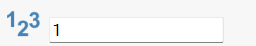
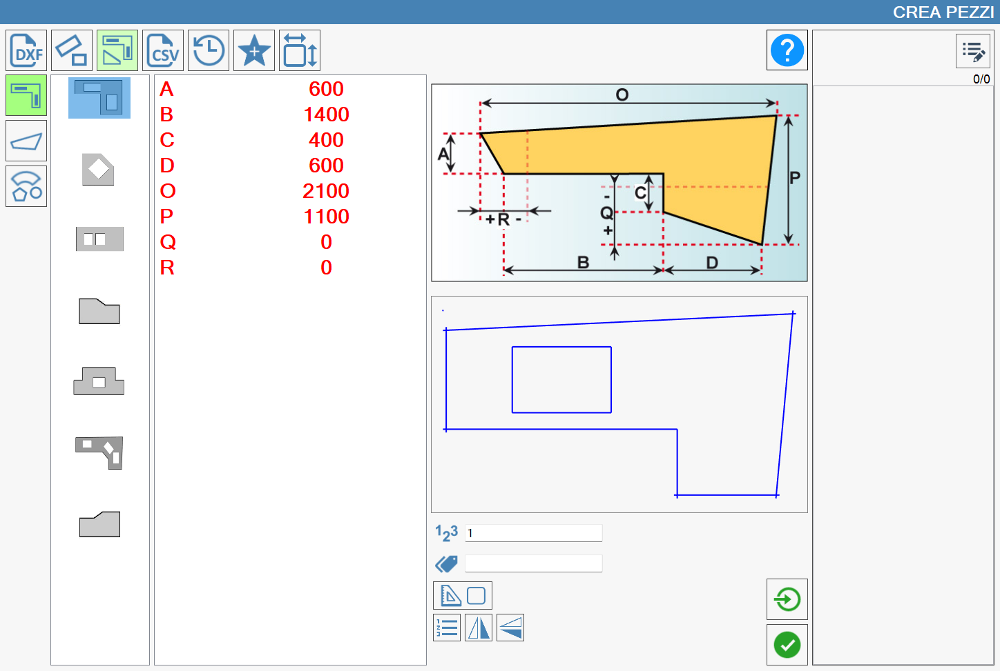
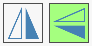
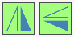

In questa sezione, è possibile costruire dei pezzi utilizzando figure parametriche dalla forma prestabilita. Per disegnare una figura, è sufficiente inserire le quote che la caratterizzano.

Categorie di figure parametriche
Facendo riferimento all’immagine soprastante, nella colonna di sinistra sono rappresentate le principali categorie di forme parametriche.
Piani cucina | |
Piedoca | |
 | Figure geometriche |
Anteprima e valori parametrizzati
In base alla selezione della categoria, nella colonna appena più a destra si apre la scelta della forma corretta da utilizzare.
Una volta decisa la figura, vengono visualizzati i campi da compilare con le misure necessarie per la creazione del pezzo. Un’immagine, posta al centro della schermata, fornirà indicazioni dettagliate riguardo alle dimensioni che devono essere inserite. In basso, rispetto all’immagine di riferimento, viene visualizzata un’anteprima della figura che si sta disegnando, che viene modificata in tempo reale in seguito a ogni modifica eseguita sui valori che caratterizzano la figura designata.
Nell’immagine seguente si può vedere un esempio di creazione di un piano cucina.
Come si può notare, una volta che le misure richieste vengono inserite, si colorano di rosso, mentre nella situazione di partenza erano di colore nero.
Come nei precedenti paragrafi, una volta completato l’inserimento delle quote è possibile inserire la marca (o etichetta) che viene visualizzata sul pezzo quando è inserito nell’area di lavoro, il numero di copie del pezzo, e decidere se eseguire l’importazione singola.

Impostazioni aggiuntive
Parametri aggiuntivi
Per la creazione dei pezzi rettangolari vengono richiesti i seguenti dati:
 | Numero dei pezzi |
 | Marca |
Pulsanti aggiuntivi
 | Attiva/Disattiva fuori squadra |
 | Importazione singola |
 | Mirror |
Pezzi fuori squadra
Alcuni pezzi hanno la possibilità di essere costruiti utilizzando angoli non in squadra (ovvero diversi da 90 gradi).
Quando questa funzione è abilitata, vengono richieste ulteriori misure per permettere al programma di calcolare gli angoli del pezzo. L’inserimento di queste misure è, ancora una volta, guidato da un’immagine che sostituisce quella precedente.
Di seguito un esempio di un pezzo fuori squadra.

Le misure aggiuntive per la costruzione di figure fuori squadra non sono necessarie per la creazione del pezzo. Di default saranno sempre uguali a zero.
Mirror
Premendo i due pulsanti dedicati, è possibile ribaltare il risultato visualizzato a schermo, rispettivamente lungo l’asse verticale o orizzontale. Questa funzionalità consente di adattare la visualizzazione in base alle esigenze operative o al tipo di lavorazione in corso.
Vengono di seguito proposti alcuni esempi di ribaltamento orizzontali e verticali:
Solo ribaltamento Orizzontale | Solo ribaltamento Verticale | Ribaltamento Orizzontale e Verticale |
 |  |  |
 |  |  |